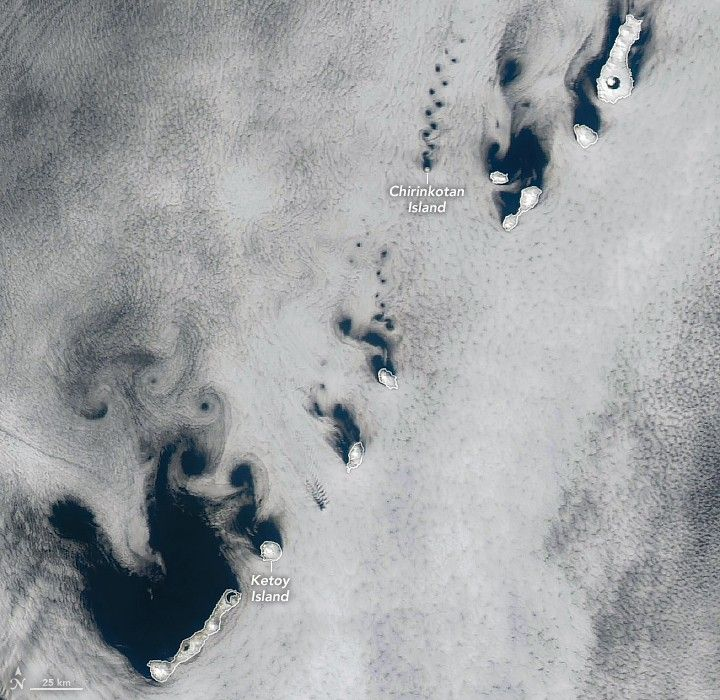

Vortex Variety Hour
Winds blowing across the Kuril Islands, between northern Japan and Russia’s Kamchatka Peninsula, sent clouds spinning into compact coils and sprawling swirls on a spring day in 2025. The MODIS (Moderate Resolution Imaging Spectroradiometer) on NASA’s Aqua satellite captured this image of the vortices on April 14, 2025.
The trails of staggered, counterrotating spirals are called von Kármán vortex streets. This distinctive pattern can occur when a fluid passes a tall, isolated, stationary object. If winds are too weak, clouds simply flow smoothly around the obstacles. If they are too strong, vortices break apart and cannot maintain their shape. In the sweet spot, typically between 18 and 54 kilometers (11 and 34 miles) per hour, the clouds will reveal details of the airflow.
The cloud streets take on different orientations across the length of the archipelago, indicating wind directions that vary from southeasterly to southerly. Also note how the vortices are sized in proportion to the diameter of the islands that created them. At only 3 kilometers (2 miles) wide, Chirinkotan Island in the upper right of the image produced diminutive whorls to match. Near the center of the image, Ketoy Island has a diameter of approximately 10 kilometers (6 miles), and larger vortices trailed in its wake. Vortices tend to grow larger and diverge as they continue downstream.
The image also shows organized vortex streets appearing downwind of islands that are more rounded than elongated. In the built environment, engineers and architects know that tall, cylindrical structures can also shed von Kármán vortices in the right conditions. The process can exert damaging forces on structures, but devices such as dampers and fins can be used to counteract them.